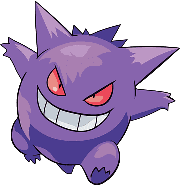

Gengar is a shadow-like, round-bodied Pokémon with two large, pointed ears and short spikes lining its back. Gengar has two red eyes and a toothy, sinister smile. It has claws on its hands. Gengar stands on its two short legs, but it can Levitate as well. In Mega Gengar, it has a hot pink smoke around it, and it has a 3rd yellow eye, its hands are buried in the ground, it also got more spikes in its back and tail. In Gigantamax Gengar, it has grown much larger, its red eyes turned yellow with soulless white pupils, the body hasn't changed much, but there is no physical feet visible, its hands are detached and in the ground, its huge mouth also looks like some sort of room, with a long tongue inside.